Identita domu
Upozornění – hypotéza – zbořená dvorní stavba: Dvorní stavba hostince U Lípy (čp. 627) v zadní části dvora 772 u zdi plynárny. Stála ještě v únoru 1945, před dokumentací KSPPOP byla zbořena; GIS 1938 ji nevede. Poloha a délka (~18 m) podle Lageplanu plynárny z února 1945 a skici KSPPOP, členění na kůlnu pro vozy a dvoupodlažní obytnou část se schodišťovým přístavkem podle stavebního plánu pro Franze Siegla (projekt je delší, 23,7 m). Hloubka, výšky a střechy jsou odhad, otvory nemodelovány.
Skica KSPPOP k domu 772 kreslí v zadní části dvora u hranice s pozemkem bývalé plynárny „sbořený nádvorní dům (627)“. Plány 627 patří hostinci U Lípy (Gasthof zur Linde, Seligerstraße čp. 627/772). Lageplan okolí plynárny z února 1945 (1 : 500) ukazuje na pozemku U Lípy zadní zeď dlouhou asi 18 m, rovnoběžnou s ulicí ve vzdálenosti asi 38 m, se schodišťovým výstupkem a se šikmou stěnou podél zdi plynárny. Tvarem odpovídá projektu obytné budovy s kůlnou pro Franze Siegla; projekt je však dlouhý 23,7 m, model se proto řídí zaměřením z roku 1945.
Poznámka k identitě a GIS: GIS 1938 tuto dvorní stavbu nevede; poloha je zaměřena z Lageplanu plynárny z února 1945 vůči uliční čáře domu 772 a zdi plynárny.
Použité prameny: skica KSPPOP cp_772_001; Lageplan über das Gelände beim städt. Gaswerk, únor 1945 (cp_523_010, struktura 523); Plan eines Wohn- und Schupfengebäudes für Herrn Franz Siegl (cp_627_001) – přízemí, pohled, řezy, situace; plány cp_627_002 a cp_627,772_005 (hostinec U Lípy).
Přílohy v databázi (8)
Všechny přílohy struktury 627 v databázi Libuše, načtené živě 25. 10. 2026 (jen pro čtení) a otevřené. Kliknutím otevřete větší náhled.

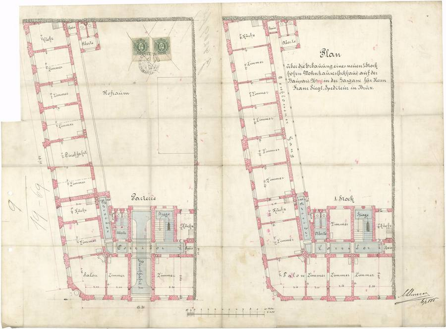
plán / výkres
SHA-256 c801eb6a7628…

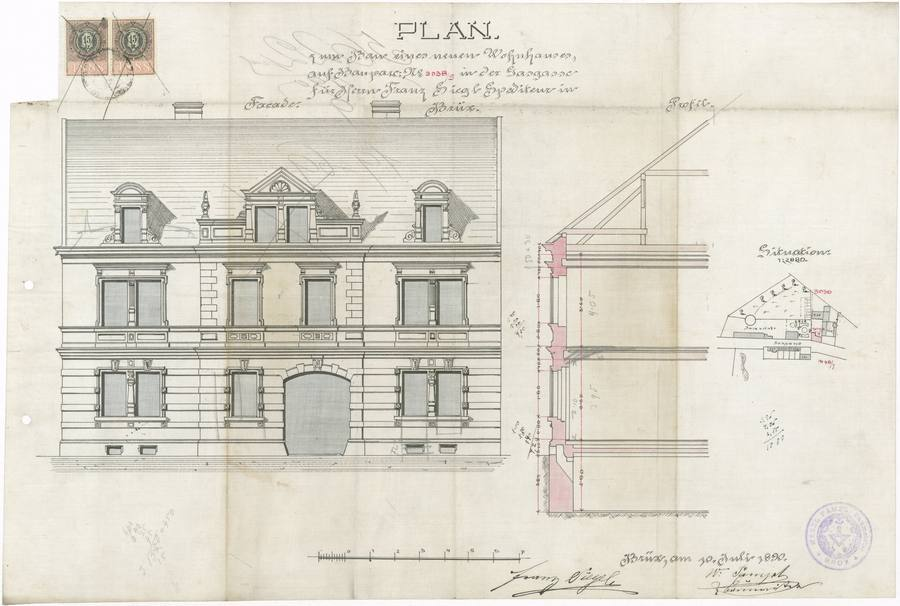
plán / výkres
SHA-256 c04425e0a615…

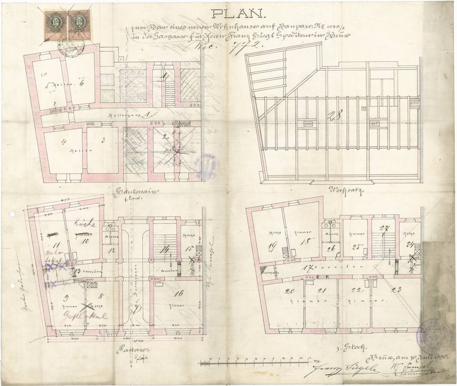
plán / výkres
SHA-256 0500352167c8…

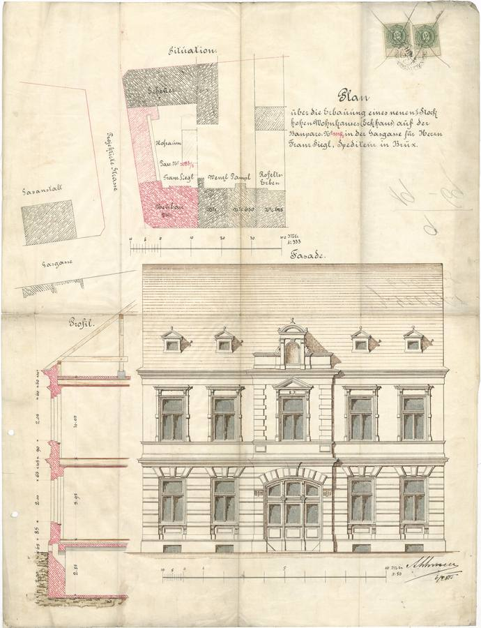
plán / výkres
SHA-256 15a0bd04ff88…

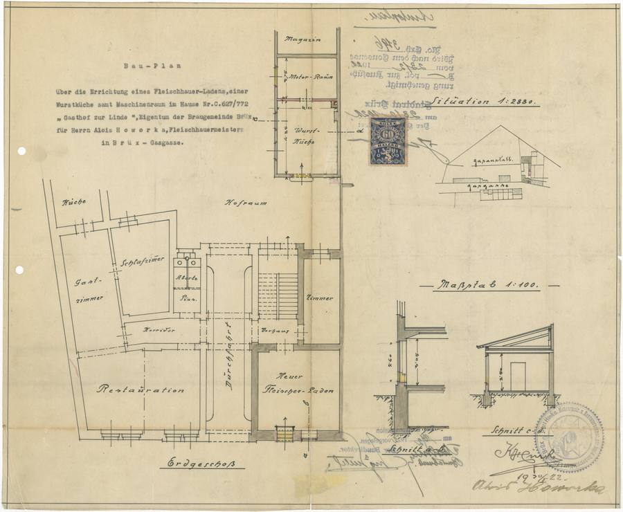
plán / výkres
SHA-256 b90cb15773a1…

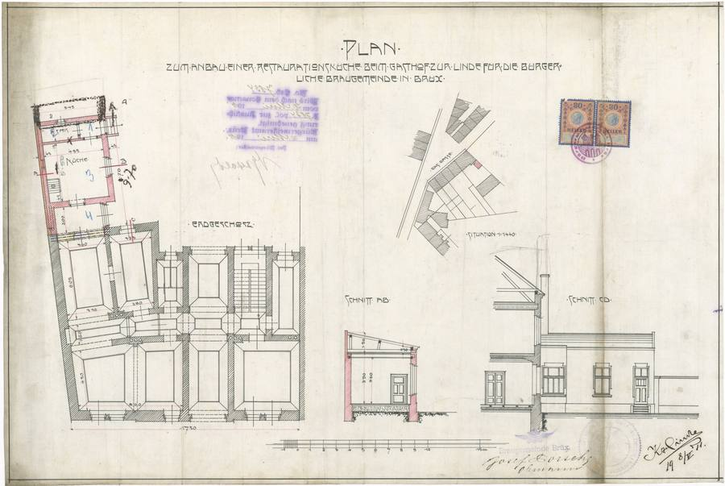
plán / výkres
SHA-256 e59aec7a25fe…

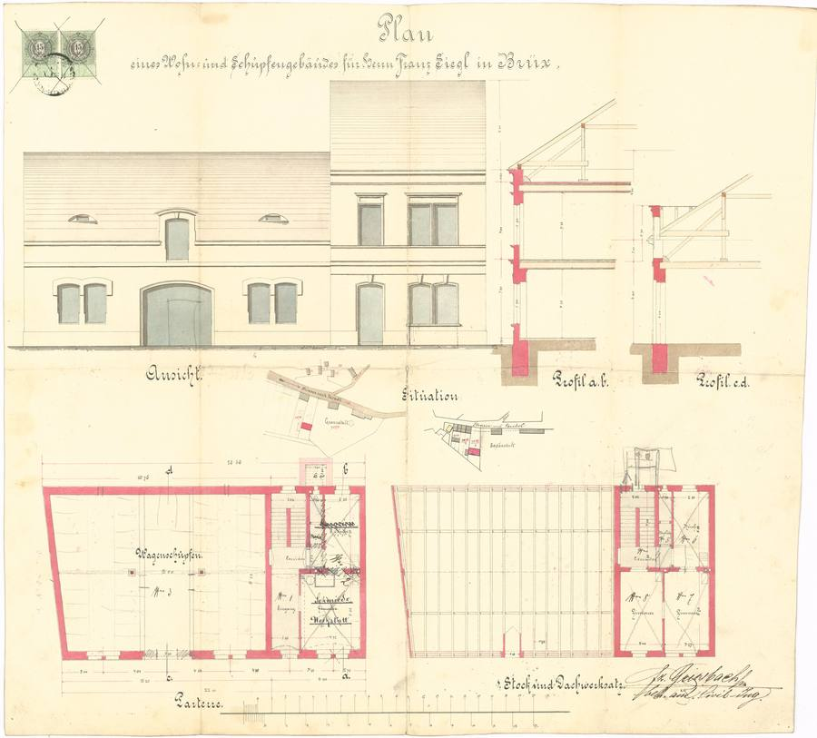
plán / výkres
SHA-256 b4552da17a5b…

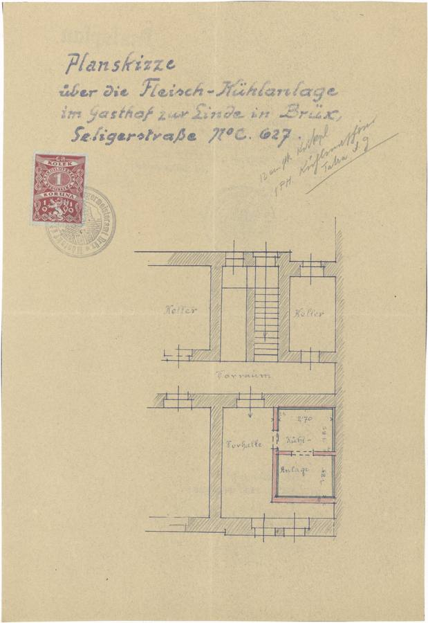
plán / výkres
SHA-256 3e10b3a99b82…
Geometrie
| Revize geometrie | r1 |
|---|---|
| Úsek ulice | S1 · jižní strana VSV ramene |
| Poloha | bez budovy GIS – poloha zaměřena z pramenů (viz identita) |
| Šířka průčelí | 9,75 m |
| Výška okapu | 5,00 m (odhad) |
| Podlaží | 1 + 2 (hypotéza) |
| Střecha podle pramenů | sedlové střechy 35° – odhad (kůlna okap 5,0 m, obytná část okap 8,5 m podle projektu) |
| Otvory / vikýře v modelu | 0 / 0 |
| Polygonů | 101 |
| Platnost modelu | hypotéza – zbořená dvorní stavba (stav kolem 1938–1945); platí do: doloženo do února 1945; zbořeno před dokumentací KSPPOP |
Kontrolní pohledy

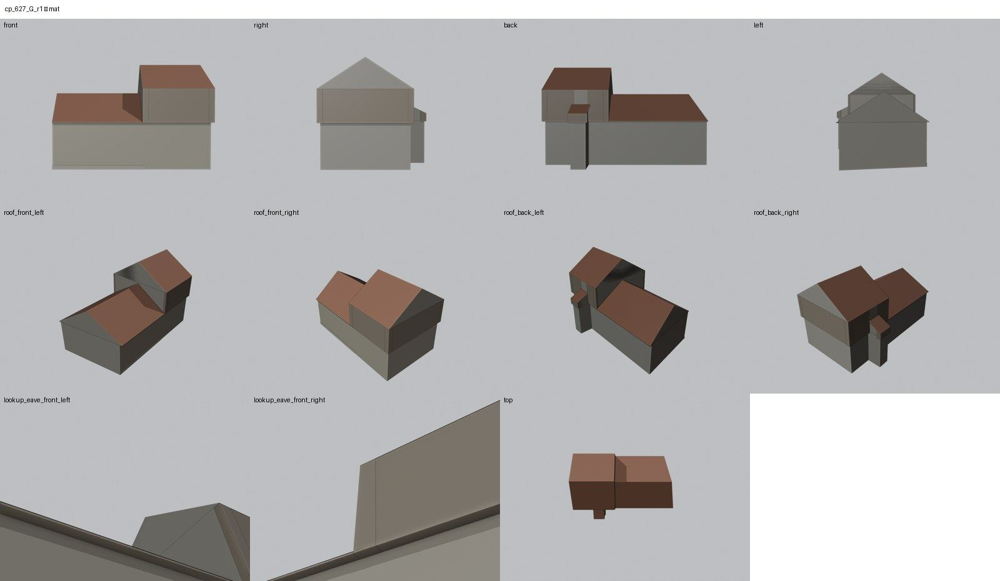

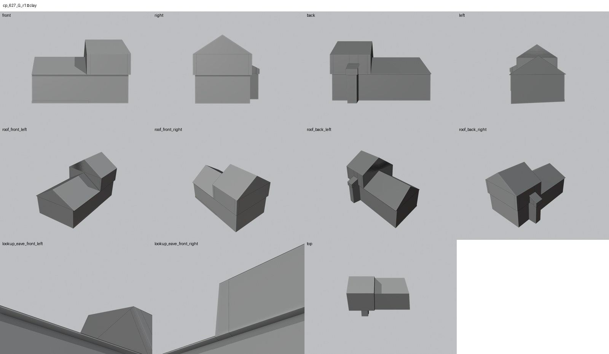

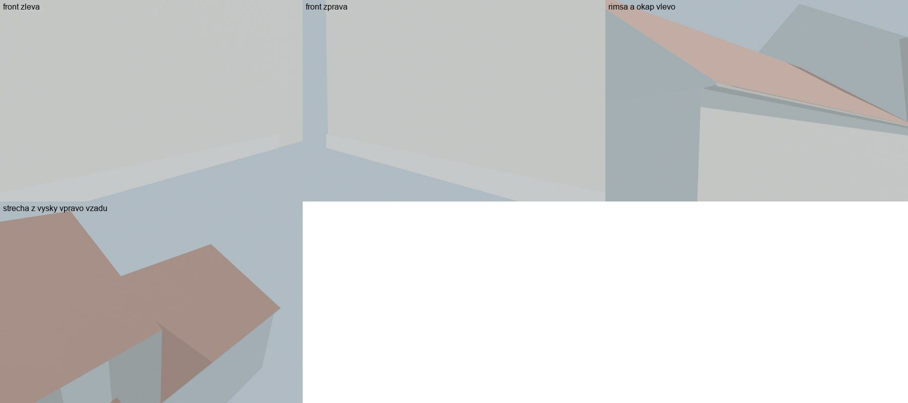
Kontrola modelu
| Brána geometrie (automaticky) | v pořádku |
|---|---|
| Uzavřené podkroví (GLB) | v pořádku: zásahy paprsků 0, nekryté zdivo 0,00 m², střecha nad prázdnem 0,00 m² |
| UV mapování | v pořádku: 0 zkolabovaných ploch z 101 |
| Síť | v pořádku |
| Počty otvorů proti pramenu | souhlasí |
| Vizuální kontrola | prošla (Claude (Opus 5.5), 2026-11-25) |
| Kontrola střechy | prošla |
- hlavní průčelí: bez fotografie fasády – otvory nemodelovány (souhlasí)
Textury
bez textur (hypotéza – zbořená dvorní stavba – jen prosté materiály)
Až Codex dodá texturovaný model, objeví se v prohlížeči nahoře volba Textury (Codex).
Hypotézy
Upozornění – hypotéza – zbořená dvorní stavba: Dvorní stavba hostince U Lípy (čp. 627) v zadní části dvora 772 u zdi plynárny. Stála ještě v únoru 1945, před dokumentací KSPPOP byla zbořena; GIS 1938 ji nevede. Poloha a délka (~18 m) podle Lageplanu plynárny z února 1945 a skici KSPPOP, členění na kůlnu pro vozy a dvoupodlažní obytnou část se schodišťovým přístavkem podle stavebního plánu pro Franze Siegla (projekt je delší, 23,7 m). Hloubka, výšky a střechy jsou odhad, otvory nemodelovány.
Vše níže je model_hypothesis, provisional, locked: false.
- délka a poloha podle Lageplanu 1945 (převod přes oba plynojemy), projekt je o 5 m delší
- hloubka 9,5 m je odhad (Lageplan ≥ 6,5 m, projekt 12,8 m)
- výšky podle projektu, střechy odhad
- otvory nejsou modelovány – fotografie neexistuje a projekt neodpovídá zaměřené délce
- platí do února 1945 (poslední doklad); zbořeno před dokumentací KSPPOP
Technický zápis hypotéz v plánu modelu (revize r1, bez diakritiky)
- délka 18,3 m (zadní) / 16,7 m (přední) a poloha z Lageplanu 1945 (převod přes plynojemy 14,6 px/m, poloha vůči 772 a zdi plynárny); projekt je 23,66 m – realizace se liší
- hloubka 9,5 m odhad (Lageplan ukazuje boční stěnu ≥ 6,5 m, projekt 12,8 m, skica KSPPOP ~8,6 m)
- výšky podle projektu: kůlna okap 5,0 m, obytná část okap 8,5 m; střechy sedlové 35° – odhad
- otvory nemodelovány (projekt neodpovídá zaměřené délce, fotografie neexistuje)
Historie revizí modelu
- r1 25.11.2026: zbořená dvorní stavba bez GIS jako hypotéza (dotaz uživatele 25. 11. 2026: „v GISu není všechno“)
Soubory
- Geometrie čp. 627, GLB (revize r1)
- Pracovní model: F:\MOST\output\u_hriste_street_claude_2026-10-25\houses\cp627\r1\cp_627_G_r1.blend
- Plán modelu: F:\MOST\output\u_hriste_street_claude_2026-10-25\houses\cp627\geometry_plan.json